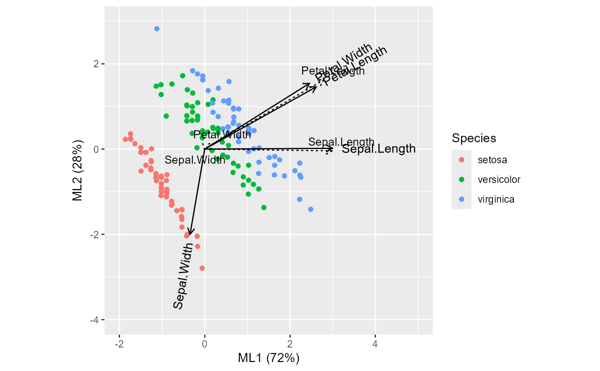

Functionality for factor analysis ('fa') objects
methods-fa.RdThese methods extract data from, and attribute new data to,
objects of class "fa" as returned by psych::fa().
Usage
# S3 method for class 'fa'
as_tbl_ord(x)
# S3 method for class 'fa'
recover_rows(x)
# S3 method for class 'fa'
recover_cols(x)
# S3 method for class 'fa'
recover_inertia(x)
# S3 method for class 'fa'
recover_coord(x)
# S3 method for class 'fa'
recover_conference(x)
# S3 method for class 'fa'
recover_supp_rows(x)
# S3 method for class 'fa'
recover_supp_cols(x)
# S3 method for class 'fa'
recover_aug_rows(x)
# S3 method for class 'fa'
recover_aug_cols(x)
# S3 method for class 'fa'
recover_aug_coord(x)Value
The recovery generics recover_*() return core model components, distribution of inertia,
supplementary elements, and intrinsic metadata; but they require methods for each model class to
tell them what these components are.
The generic as_tbl_ord() returns its input wrapped in the 'tbl_ord'
class. Its methods determine what model classes it is allowed to wrap. It
then provides 'tbl_ord' methods with access to the recoverers and hence to
the model components.
Details
Factor analysis of a data matrix relies on an an eigendecomposition of its
correlation matrix, whose eigenvectors (up to weighting) comprise the
variable loadings. For this reason, both column and supplementary row
recoverers retrieve the loadings and inertia is evenly distributed between
them. When computed and returned by psych::fa(), the case scores are
accessible as supplementary elements. Redistribution of inertia commutes
through both score calculations.
See also
Other methods for eigen-decomposition-based techniques:
methods-principal
Other models from the psych package:
methods-principal
Examples
# data frame of Anderson iris species measurements
class(iris)
#> [1] "data.frame"
head(iris)
#> Sepal.Length Sepal.Width Petal.Length Petal.Width Species
#> 1 5.1 3.5 1.4 0.2 setosa
#> 2 4.9 3.0 1.4 0.2 setosa
#> 3 4.7 3.2 1.3 0.2 setosa
#> 4 4.6 3.1 1.5 0.2 setosa
#> 5 5.0 3.6 1.4 0.2 setosa
#> 6 5.4 3.9 1.7 0.4 setosa
# fa on iris
iris |>
ordinate(~psych::fa(., nfactors = 2L, rotate = "varimax", scores =
"regression", fm = "ml"),
cols = 1:4, augment = c(Sepal.Width, Species)) |>
print() -> iris_fa
#> # A tbl_ord of class 'psych': (150 x 2) x (8 x 2)'
#> # 2 coordinates: ML1 and ML2
#> #
#> # Rows (standard): [ 150 x 2 | 3 ]
#> ML1 ML2 | .element Sepal.Width Species
#> | <chr> <dbl> <fct>
#> 1 -0.897 -1.12 | 1 score 3.5 setosa
#> 2 -1.15 -0.668 | 2 score 3 setosa
#> 3 -1.38 -0.380 | 3 score 3.2 setosa
#> 4 -1.50 0.0351 | 4 score 3.1 setosa
#> 5 -1.01 -0.926 | 5 score 3.6 setosa
#> # ℹ 145 more rows
#> #
#> # Columns (principal): [ 8 x 2 | 5 ]
#> ML1 ML2 | .element name uniqueness
#> | <chr> <chr> <dbl>
#> 1 0.997 0.00579 | 1 active Sepal.Leng… 0.00499
#> 2 -0.115 -0.665 | 2 active Sepal.Width 0.545
#> 3 0.871 0.486 | 3 active Petal.Leng… 0.00486
#> 4 0.818 0.514 | 4 active Petal.Width 0.0676
#> 5 0.996 -0.0135 | 5 pinv_weight Sepal.Leng… NA
#> 6 -0.00183 -0.00700 | 6 pinv_weight Sepal.Width NA
#> 7 0.931 0.542 | 7 pinv_weight Petal.Leng… NA
#> 8 0.0653 0.0425 | 8 pinv_weight Petal.Width NA
#> # ℹ 2 more variables:
#> # communality <dbl>,
#> # complexity <dbl>
# recover loadings
get_cols(iris_fa, elements = "active")
#> ML1 ML2
#> Sepal.Length 0.9974854 0.005791102
#> Sepal.Width -0.1145376 -0.664902244
#> Petal.Length 0.8710678 0.486186998
#> Petal.Width 0.8177141 0.513601489
# recover pseudoinverse of weights
get_cols(iris_fa, elements = "pinv_weight")
#> ML1 ML2
#> Sepal.Length 0.995641202 -0.013489741
#> Sepal.Width -0.001833319 -0.006999978
#> Petal.Length 0.931335391 0.541790374
#> Petal.Width 0.065251840 0.042512913
# recover scores
head(get_rows(iris_fa, elements = "score"))
#> ML1 ML2
#> [1,] -0.8973709 -1.12046785
#> [2,] -1.1453072 -0.66794369
#> [3,] -1.3793897 -0.38044060
#> [4,] -1.4972539 0.03514146
#> [5,] -1.0137042 -0.92598174
#> [6,] -0.5303184 -1.42288335
# augment column loadings with uniquenesses
(iris_fa <- augment_ord(iris_fa))
#> # A tbl_ord of class 'psych': (150 x 2) x (8 x 2)'
#> # 2 coordinates: ML1 and ML2
#> #
#> # Rows (standard): [ 150 x 2 | 3 ]
#> ML1 ML2 | .element Sepal.Width Species
#> | <chr> <dbl> <fct>
#> 1 -0.897 -1.12 | 1 score 3.5 setosa
#> 2 -1.15 -0.668 | 2 score 3 setosa
#> 3 -1.38 -0.380 | 3 score 3.2 setosa
#> 4 -1.50 0.0351 | 4 score 3.1 setosa
#> 5 -1.01 -0.926 | 5 score 3.6 setosa
#> # ℹ 145 more rows
#> #
#> # Columns (principal): [ 8 x 2 | 5 ]
#> ML1 ML2 | .element name uniqueness
#> | <chr> <chr> <dbl>
#> 1 0.997 0.00579 | 1 active Sepal.Leng… 0.00499
#> 2 -0.115 -0.665 | 2 active Sepal.Width 0.545
#> 3 0.871 0.486 | 3 active Petal.Leng… 0.00486
#> 4 0.818 0.514 | 4 active Petal.Width 0.0676
#> 5 0.996 -0.0135 | 5 pinv_weight Sepal.Leng… NA
#> 6 -0.00183 -0.00700 | 6 pinv_weight Sepal.Width NA
#> 7 0.931 0.542 | 7 pinv_weight Petal.Leng… NA
#> 8 0.0653 0.0425 | 8 pinv_weight Petal.Width NA
#> # ℹ 2 more variables:
#> # communality <dbl>,
#> # complexity <dbl>
# biplot with both loadings and pseudoinverse weights
ggbiplot(iris_fa, scale_cols = 3) +
geom_rows_point(elements = "score", aes(color = Species)) +
geom_cols_vector(linetype = "solid") +
geom_cols_text_radiate(label = names(iris[1:4]), elements = "active",
linetype = "solid") +
geom_cols_vector(linetype = "dotted", elements = "pinv_weight") +
geom_cols_text_repel(label = names(iris[1:4]), elements = "pinv_weight",
linetype = "dotted", size = 3.5) +
# include vector labels in plot window (specific to graphics device)
scale_x_continuous(limits = ~ range(.x, c(-2, 5))) +
scale_y_continuous(limits = ~ range(.x, c(-4, 3)))
#> Warning: Ignoring unknown parameters: `linetype`
#> Warning: Ignoring unknown parameters: `linetype`
#> Warning: `GeomTextRadiate` is deprecated; use `GeomVector` instead.
